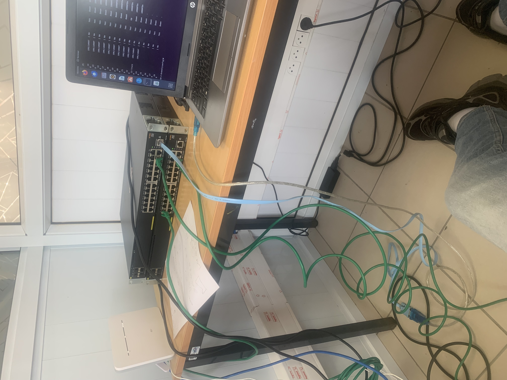
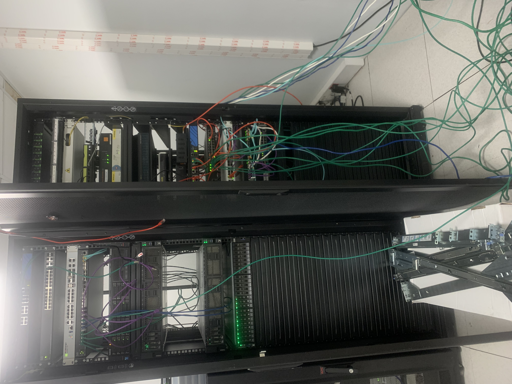
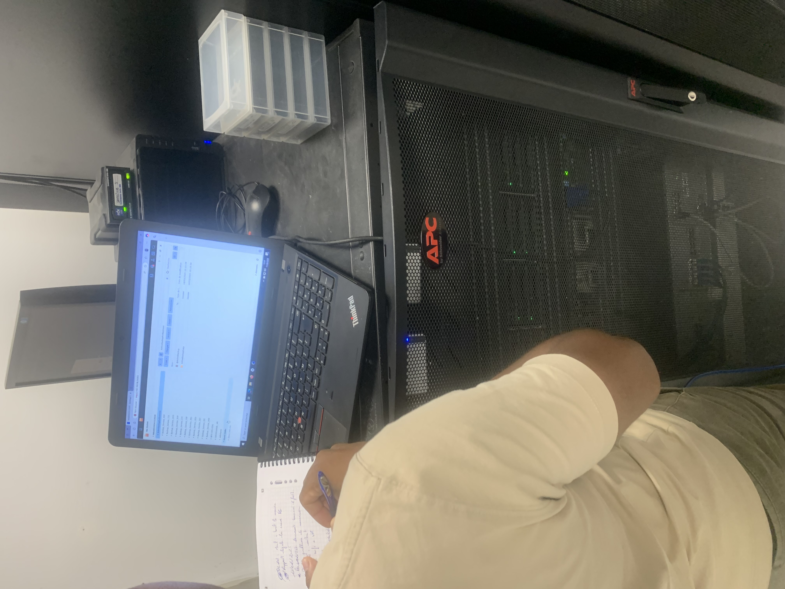
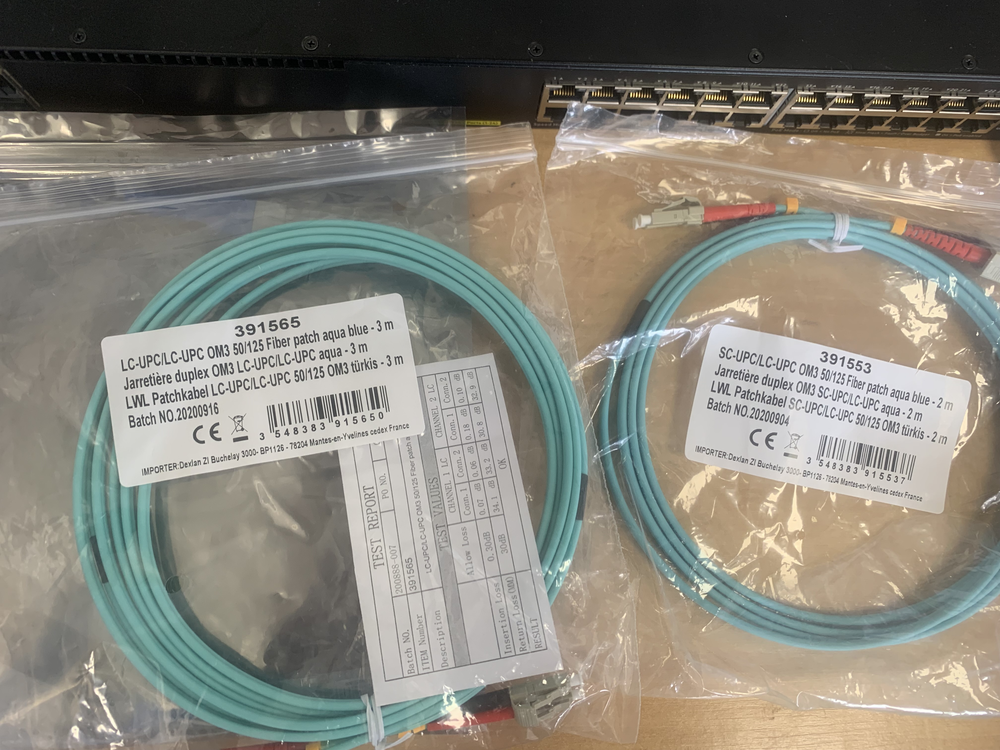
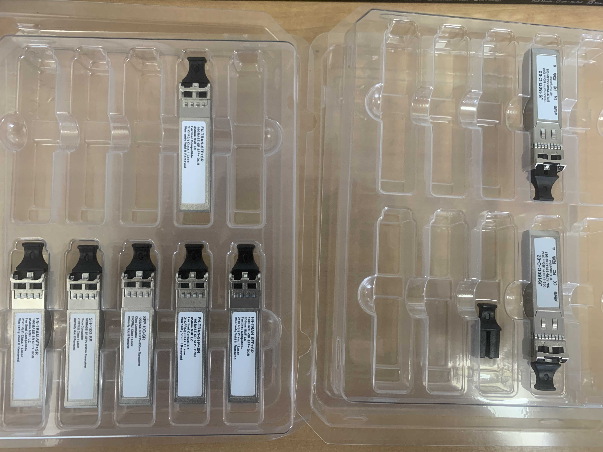
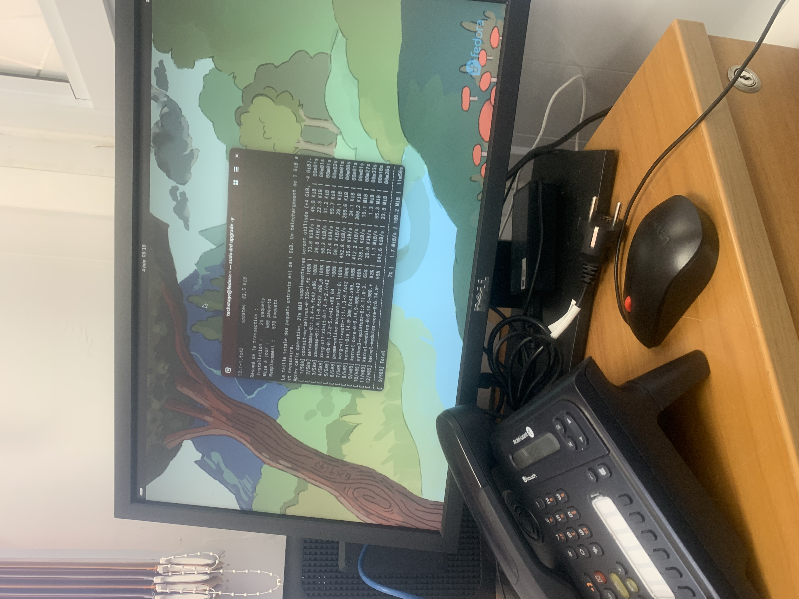

|
Étudiant en BTS SIO option SISR au Lycée Melkior-Garré de Cayenne.
Passionné par la cybersécurité, les réseaux et l'administration système.
Étudiant BTS SIO SISR · 20 ans · Cayenne, Guyane française
Passionné par l'informatique et particulièrement par la cybersécurité et l'administration des systèmes et réseaux, je suis actuellement en 2ème année de BTS SIO option SISR au Lycée Melkior-Garré de Cayenne.
Mon parcours m'a conduit à travailler sur des projets concrets comme la mise en place d'un SIEM Wazuh et d'un serveur FreeRADIUS, ainsi qu'à effectuer deux stages en collectivités territoriales de Guyane.
Mon objectif : me spécialiser en infrastructure et cybersécurité pour protéger les systèmes d'information des organisations.
Épreuve E6 — Administration des systèmes et réseaux
Durant mon stage à la Mairie de Macouria, mon tuteur M. BICEP m'a présenté la solution Wazuh. Cette découverte m'a motivé à déployer moi-même ce système SIEM au lycée Melkior-Garré.
Dans les petites structures, le Wi-Fi est souvent protégé par un simple mot de passe partagé. J'ai mis en place FreeRADIUS pour centraliser l'authentification réseau avec des identifiants individuels par utilisateur.
05 janvier 2026 — 02 février 2026 · 5 semaines
Tuteur : M. Bruno BICEP · Service Informatique
Observation d'un serveur Wazuh professionnel, compréhension de l'architecture SIEM/XDR. Motivation pour le Projet E6 N°1.
Étude documentaire du protocole RADIUS, modèle AAA, cas d'usage en entreprise. Base du Projet E6 N°2.
Fonctionnement d'un service informatique en collectivité territoriale, enjeux cybersécurité du secteur public.
02 juin 2025 — 04 juillet 2025 · 5 semaines
Tuteurs : Franzy Guinguincoin & Brian Clet · Service Informatique
Création de VLAN pour segmenter le réseau, désactivation Telnet, activation SSH avec clés cryptographiques, paramétrage DNS et routage statique.
Déploiement de l'hyperviseur Proxmox, configuration IP fixe, DNS, fuseau horaire et nom d'hôte pour la virtualisation des serveurs.
Maintenance du serveur, création de répertoires, correction de permissions, gestion des utilisateurs et des droits d'accès.

Configuration switch CLI
Salle serveurs — Baies rack
Travail sur Proxmox / rack APC
Câbles fibre OM3 LC-UPC
Modules SFP+ 10GBase-SR
Administration LinuxSujet : L'Intelligence Artificielle dans l'Informatique
L'Intelligence Artificielle transforme profondément le domaine informatique, notamment en cybersécurité et en administration système. En tant que futur technicien SISR, comprendre l'impact de l'IA sur les infrastructures est devenu indispensable.
Ma veille porte sur l'évolution des modèles de langage (LLM), l'IA générative, et plus particulièrement l'utilisation de l'IA dans la détection de cybermenaces et la supervision des infrastructures.
Émergence des modèles comme GPT-4, Llama, Mistral. Ces modèles révolutionnent la façon dont les techniciens peuvent obtenir de l'aide pour diagnostiquer des pannes, rédiger des scripts et analyser des configurations réseau.
L'IA est désormais intégrée dans les outils SIEM pour améliorer la détection des menaces. Des solutions comme Wazuh exploitent l'IA pour réduire les faux positifs et prioriser les alertes critiques. L'IA est aussi utilisée par les attaquants (phishing automatisé, génération de malwares).
Face aux enjeux de confidentialité (RGPD), les organisations publiques comme les mairies s'orientent vers des solutions d'IA déployées localement (on-premise). Des outils comme Ollama permettent de faire tourner des LLM en local sans envoyer de données vers le cloud.
Les outils d'IA commencent à automatiser des tâches d'administration : analyse de logs, détection de configurations erronées, recommandations de sécurité. L'administrateur système de demain devra maîtriser ces outils pour rester compétitif.
11 mars 2026
GIP Pix · Lycée Melkior et Garré
Score : 254/895 · Niveau Novice 2
Code : P-WK694BB8
Session 2026
BTS SIO SISR · Lycée Melkior-Garré
Réalisations professionnelles — Épreuve E5
N° candidat : 02051912515
Vous souhaitez me contacter pour mon BTS SIO SISR ou pour une opportunité professionnelle ? N'hésitez pas à m'écrire !